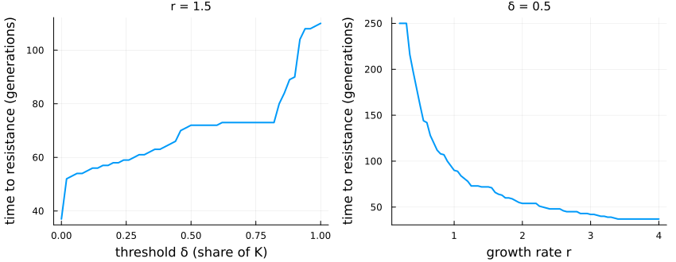
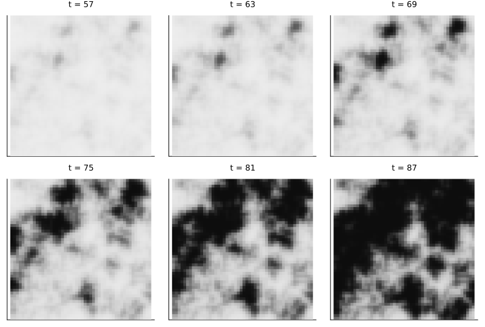
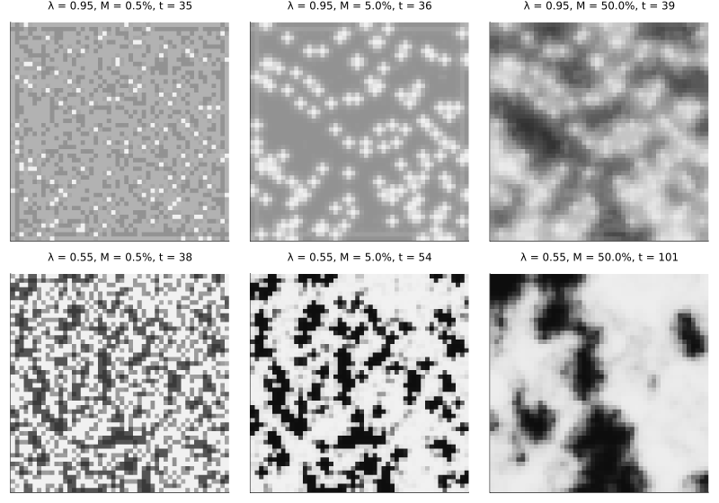

Pesticide resistance across a region
Simon Frost
Overview
Spraying a field selects for resistance in its pests; refuges that are not sprayed, and pests that move between fields, slow that down. Peck and Ellner (1997) asked how the economic threshold at which farmers spray, the life history of the pest and the arrangement of a region change the time until resistance takes over. Their model is a lattice of fields:
- each field holds a pest population with one resistance gene, which grows logistically each generation;
- resistance costs its carriers a little;
- a treated field whose population passes the economic threshold is sprayed, and the spray kills susceptible pests (and some heterozygotes);
- a share of every field’s pests then moves to the neighbouring fields;
- refuges are never sprayed, and rotated fields are emptied every other generation.
After a random start, the model is deterministic. This implementation is an adaptation: it follows the source’s equations, choosing where they are ambiguous as the deviations below list.
ENV["GKSwstype"] = "100"
using EcologicalCellularAutomata
using CellularAutomataCore
using Plots
using StatisticsA single field
The source first studied one field: 10⁷ pests, a carrying capacity twice that, a resistance allele starting at a frequency of 0.0005, a spray killing 75% of susceptibles, a cost of 0.0005 and a dominance of 0.05. A field on its own is a lattice of one cell.
model = build_resistance_regional()
function single(; r=1.5, delta=0.5)
u0 = (; N=fill(1e7, 1, 1), q=fill(5e-4, 1, 1), sprayed=fill(true, 1, 1),
rotated=fill(false, 1, 1), K=fill(2e7, 1, 1), neighbours=fill(Int8(0), 1, 1))
p = merge(defaults(model), (; r, delta, rho=0.75, s=5e-4, h=0.05, Ks=2e7))
t = resistance_time(solve(CAProblem(model, u0, 250, p; space=Grid(1, 1))))
return t === nothing ? 250 : t
end
deltas = 0:0.02:1
rs = 0.2:0.05:4
plot(plot(deltas, [single(; delta=d) for d in deltas]; xlabel="threshold δ (share of K)",
title="r = 1.5"),
plot(rs, [single(; r) for r in rs]; xlabel="growth rate r", title="δ = 0.5");
ylabel="time to resistance (generations)", legend=false, lw=2, layout=(1, 2),
size=(850, 330), titlefontsize=10, left_margin=4Plots.mm, bottom_margin=4Plots.mm)
As in the source’s Fig. 2, a higher threshold (spraying less often) delays resistance in steps, from about 58 generations at δ = 0.2 to 110 at δ = 1, and faster growth hastens it: about 216 generations at r = 0.35, 90 at r = 1 and 37 at r = 3.5. The steps come from the population’s cycles: as the threshold rises, the cycle sprays in fewer generations. Spraying every generation (δ = 0) gives 37 generations, against about 50 in the source.
A region
The source’s spatial runs use 50 × 50 fields, 55% of them treated, with half the treated fields’ carrying capacity in the refuges. With half of each field’s pests migrating each generation (the source’s Fig. 6), resistance spreads in patches:
prob = problem(:resistance_regional; seed=1, pmap=(; s=0.005, delta=0.8, M=0.5))
sol = solve(prob)
println("time to resistance: ", resistance_time(sol))
plot([heatmap(sol.u[t + 1].q; clims=(0, 1), c=cgrad(:grays; rev=true), yflip=true, colorbar=false,
title="t = $t", titlefontsize=9, ticks=false, aspect_ratio=1)
for t in (57, 63, 69, 75, 81, 87)]...; layout=(2, 3), size=(800, 540))time to resistance: 81
Dark fields are resistant. Patches appear after about 60 generations, grow and merge, and cover most of the region by generation 87; resistance takes over the region (a mean frequency above one half) at generation 81. The patches cut across the map of treated fields and refuges: what makes a field resistant is as much its neighbours as its own spraying.
Migration and refuges
The source’s Fig. 7 compares migration of 0.5%, 5% and 50% a generation with 95% and 55% of fields treated. Here each region is shown when its mean frequency first passes 0.3:
snap = Matrix{Any}(undef, 2, 3)
for (i, lambda) in enumerate((0.95, 0.55)), (j, M) in enumerate((0.005, 0.05, 0.5))
s = solve(problem(:resistance_regional; lambda, kappa=0.9, seed=3,
pmap=(; M, delta=0.45)))
k = something(findfirst(u -> resistance_summary(u).mean > 0.3, s.u), length(s.u))
snap[i, j] = heatmap(s.u[k].q; clims=(0, 1), c=cgrad(:grays; rev=true), yflip=true, colorbar=false,
ticks=false, aspect_ratio=1, titlefontsize=8,
title="λ = $lambda, M = $(100M)%, t = $(k - 1)")
end
plot(permutedims(snap)...; layout=(2, 3), size=(800, 560))
With little migration each field follows its own spraying: with 95% of fields treated, the refuges stay susceptible on their own at 0.5% migration and with their neighbours, in small crosses, at 5%; with 55% treated, susceptible and resistant fields form a fine mosaic. With much migration, resistance forms large smooth patches that ignore the spray map.
The factorial
The source ran every combination of the levels of its Table 2 and averaged the time to resistance over the others. All 41,472 runs of that factorial, one for each combination:
levels = (q0=(5e-4, 5e-3), N0=(1e6, 1e8), r=(0.5, 1.5, 2.5, 3.5), h=(0.05, 0.35, 0.65),
k=(2, 3), kappa=(0.3, 0.6, 0.9), delta=(0.1, 0.45, 0.8), rho=(0.55, 0.95),
s=(5e-4, 5e-3), lambda=(0.55, 0.95), psi=(0.0, 0.4), M=(0.005, 0.05, 0.5))
combos = vec(collect(Iterators.product(values(levels)...)))
T = zeros(length(combos))
moran = fill(NaN, length(combos))
Threads.@threads for i in eachindex(combos)
c = NamedTuple{keys(levels)}(combos[i])
integ = init(problem(:resistance_regional; N0=c.N0, k=c.k, kappa=c.kappa, q0=c.q0,
lambda=c.lambda, psi=c.psi, seed=i,
pmap=(; r=c.r, h=c.h, delta=c.delta, rho=c.rho, s=c.s, M=c.M));
save_everystep=false)
T[i] = 250
for t in 1:250
step!(integ)
sm = resistance_summary(integ.u)
if sm.mean > 0.5
T[i], moran[i] = t, sm.morans_i
break
end
end
end
level(n) = [c[findfirst(==(n), keys(levels))] for c in combos]
[(; factor=n, levels=levels[n],
mean_time=[round(mean(T[level(n) .== v]); digits=1) for v in levels[n]])
for n in (:r, :h, :delta, :M, :psi, :lambda)]6-element Vector{NamedTuple{(:factor, :levels, :mean_time)}}:
(factor = :r, levels = (0.5, 1.5, 2.5, 3.5), mean_time = [91.6, 36.6, 27.5, 23.4])
(factor = :h, levels = (0.05, 0.35, 0.65), mean_time = [85.1, 28.8, 20.5])
(factor = :delta, levels = (0.1, 0.45, 0.8), mean_time = [38.6, 42.1, 53.7])
(factor = :M, levels = (0.005, 0.05, 0.5), mean_time = [35.2, 39.7, 59.4])
(factor = :psi, levels = (0.0, 0.4), mean_time = [42.4, 47.2])
(factor = :lambda, levels = (0.55, 0.95), mean_time = [52.1, 37.5])As in the source’s Fig. 3, faster growth and more dominant resistance hasten resistance most, and a higher threshold and more migration delay it. The correlations of the time to resistance with the parameters follow the source’s Table 3:
[(; factor=n, correlation=round(cor(Float64.(level(n)), T); digits=3))
for n in (:h, :r, :rho, :q0, :lambda, :M, :delta, :kappa, :psi, :s, :N0)]11-element Vector{@NamedTuple{factor::Symbol, correlation::Float64}}:
(factor = :h, correlation = -0.474)
(factor = :r, correlation = -0.429)
(factor = :rho, correlation = -0.245)
(factor = :q0, correlation = -0.16)
(factor = :lambda, correlation = -0.131)
(factor = :M, correlation = 0.188)
(factor = :delta, correlation = 0.111)
(factor = :kappa, correlation = 0.031)
(factor = :psi, correlation = 0.044)
(factor = :s, correlation = 0.004)
(factor = :N0, correlation = -0.006)and the spatial autocorrelation of resistance when it takes over rises with migration, as in its Fig. 5:
[(; M=m, morans_i=round(mean(filter(!isnan, moran[level(:M) .== m])); digits=2))
for m in levels.M]3-element Vector{@NamedTuple{M::Float64, morans_i::Float64}}:
(M = 0.005, morans_i = 0.19)
(M = 0.05, morans_i = 0.39)
(M = 0.5, morans_i = 0.81)One result is not reproduced: in the source, rotating 40% of the fields delays resistance by about 20 generations when migration is low, which makes the main effect of migration fall and then rise. Here rotation changes little at low migration; the source does not say which fields rotate or when in the generation they are emptied.
Deviations from the source
foreach(d -> println("- ", d), model_info(:resistance_regional).deviations)- Migration: a share M of each field's pests (rounded down) leaves, split equally among its neighbours in the lattice. The source's equations, read literally, send a share M to each neighbour, which cannot hold for its M = 0.5 (twice the population would leave a field with four neighbours); migration = :per_neighbour gives that reading.
- Migrants carry their field's allele frequency, and the frequency of a field after migration is the mean of its stayers' and its immigrants', weighted by number; genotypes return to Hardy-Weinberg proportions at the next generation. The source says Hardy-Weinberg does not hold during migration but counts resistant immigrants with q squared.
- Rotation: a share psi of the fields, drawn at random independently of treatment, is emptied at the end of every other generation (psi_period); an emptied field keeps its last allele frequency, which does not affect the time to resistance (the regional mean first passes 0.5 in a generation when the fields have refilled). The source does not say which fields rotate, when in the generation they are emptied or what an empty field's frequency is.
- The start: treated fields are exactly round(lambda n^2) fields drawn at random; populations are N0 plus a uniform draw on [-10^6, 10^6], rounded down (the source writes N0 plus or minus sigma, sigma uniform on [0, 10^6]); Ks = k N0 uses the nominal N0. After it, the model is deterministic, as in the source.
- The defaults are the values of the source's figures (Fig. 7, with M = 0.05); its Table 2 levels are set through the keywords and pmap. The time to resistance is nothing for a run that never reaches it (the factorial above counts such runs as 250 generations, as the source's Fig. 2 suggests).
- Spraying every generation (delta = 0) in a single field gives resistance after 37 generations, against about 50 in the source's Fig. 2A; the source's check against May and Dobson's approximation (49) assumes resistance stays rare, which exact selection does not.Peck, Steven L., and Stephen P. Ellner. 1997. “The Effect of Economic Thresholds and Life-History Parameters on the Evolution of Pesticide Resistance in a Regional Setting.” The American Naturalist 149 (1): 43–63. https://doi.org/10.1086/285978.